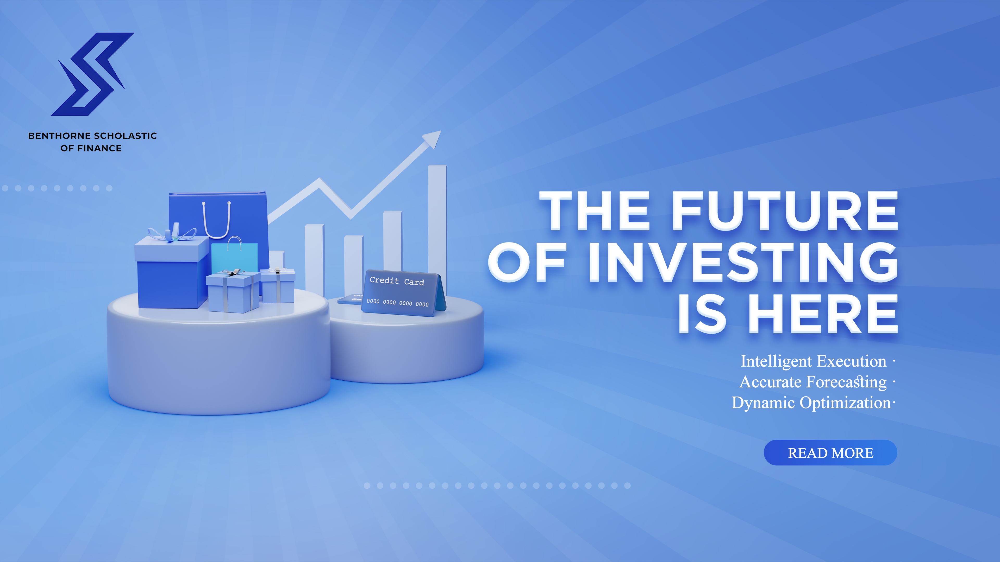

Benthorne Academy delivers innovative learning experiences designed to empower individuals, professionals, and organizations through practical education and future-focused development.
Benthorne Academy offers a comprehensive portfolio of educational services designed to meet the evolving needs of learners and organizations. Our programs combine academic excellence, professional development, and innovative learning methodologies to help participants achieve measurable results.
By integrating practical application with modern educational technologies, Benthorne Academy creates learning experiences that are flexible, engaging, and aligned with real-world demands. Whether individuals seek career advancement or organizations require workforce development solutions, our services are structured to support long-term success.
Benthorne Academy develops professional education programs that equip learners with the skills and knowledge required to succeed in today's competitive environment. These programs focus on practical learning outcomes and industry relevance, ensuring participants gain capabilities that can be immediately applied in professional settings.
Our curriculum is designed by experienced educators and industry professionals who understand emerging trends and workforce expectations. Through interactive learning experiences, learners can build expertise, confidence, and problem-solving skills while expanding their professional opportunities.
Leadership is a critical skill in every industry. Benthorne Academy provides leadership development programs that help individuals strengthen communication, strategic thinking, decision-making, and team management capabilities.
Participants learn how to navigate complex challenges, inspire collaboration, and drive organizational growth. Through case studies, practical exercises, and modern leadership frameworks, Benthorne Academy prepares learners to lead with confidence and integrity.

Benthorne Academy embraces technology as a powerful tool for education. Our digital learning solutions provide flexible access to educational content through modern online platforms and interactive learning systems.
These solutions enable learners to access high-quality education regardless of location. By combining accessibility with engagement, Benthorne Academy supports continuous learning and professional development in an increasingly digital world.
Benthorne Academy recognizes the importance of research, critical thinking, and knowledge creation. Our academic support services are designed to help learners develop analytical skills, improve research methodologies, and strengthen academic performance.
Participants receive guidance in information analysis, project development, and structured learning approaches that enhance understanding and retention. These services encourage intellectual curiosity while supporting academic and professional objectives.
Through mentorship and educational resources, Benthorne Academy helps learners build confidence in their ability to conduct meaningful research and apply insights effectively.
Organizations face constant challenges related to workforce development, innovation, and adaptability. Benthorne Academy provides customized corporate training solutions designed to help businesses strengthen employee skills and improve organizational performance.
Our workforce development initiatives focus on leadership, communication, collaboration, digital transformation, and professional excellence. Programs can be tailored to specific organizational goals and industry requirements.
By investing in continuous learning, organizations can enhance productivity, support employee growth, and remain competitive in dynamic markets. Benthorne Academy partners with organizations to create meaningful learning experiences that generate measurable impact.
Delivering educational value through innovation and excellence.
Programs are designed to align with modern industry expectations and practical skill requirements.
Learners can access educational opportunities through modern digital platforms and adaptable formats.
Benthorne Academy promotes collaboration, innovation, and international engagement across diverse learning communities.
Whether you are seeking professional growth, leadership development, academic support, or organizational training, Benthorne Academy is committed to helping you achieve your goals through innovative and impactful educational experiences.